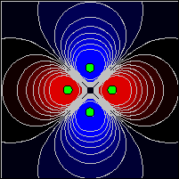

[Four charged particles produce a quadrupole electrostatic potential.]
The analytic expression for an electrostatic dipole is simple because there are only two charges. What happens if we have multiple pairs of equal and opposite charges? Although it is possible to find an analytic expression for such a configuration using a multipole expansion, the resulting mathematical expression is cumbersome. A more direct way to obtain the electrostatic potential energy is to compute the scalar field by directly summing the contribution from each charge at each point on a spatial grid. The resulting approximation to a scalar field is shown in the Charged Particles model. This model uses a Scalar Field element and requires that we compute the electrostatic potential energy from the known the locations of the charges and the locations of the grid points.
The electrostatic potential energy is computed at the grid points in the Fixed Relation workpanel with the following code:
for(int i=0; i<m; i++){ // loop over grid x
double xi= _view.scalarField.indexToX(i); // x-coordinate of grid point
for(int j=0; j<m; j++){ // loop over grid y
double yj= _view.scalarField.indexToY(j); // y-coordinate of grid point
potential[i][j]=0; // zero potential value
for(int p=0; p<n; p++){ // loop over charged particles
double dx=xi-x[p]; // grid point to charge x-separation
double dy=yj-y[p]; // grid point to charge y-separation
double r=Math.sqrt(dx*dx+dy*dy); // charge to grid point distance
if(r!=0){ // check for singularity
potential[i][j] += q[p]/r; // add potential due to charge
}
} // end of charge loop
} // end of y loop
} // end of x loop
The Fixed Relation code has three nested loops. The i-loop iterates through the grid's x-values and the j-loop iterates through the grid's y-values. The inner loop iterates over the charged particles qa with position (xa, ya), computes the distant to the grid point r, and sums the point-charge electrostatic potential energy qa/r at the (xi, yj) grid point. Run the model to see the field from other point charge configurations. Note that you can drag the charges.
The following EJS models demonstrate how to display two-dimensional scalar and vector fields using elements on the fields and plots tab on the EJS 2D Drawables palette.
The Charged Particles model was created by Wolfgang Christian and Francisco Esquembre using the Easy Java Simulations (EJS) version 4.1 authoring and modeling tool. You can examine and modify a compiled EJS model if you run the model (double click on the model's jar file), right-click within a plot, and select "Open Ejs Model" from the pop-up menu. You must, of course, have EJS installed on your computer. Information about Ejs is available at: <http://www.um.es/fem/Ejs/> and in the OSP ComPADRE collection <http://www.compadre.org/OSP/>.